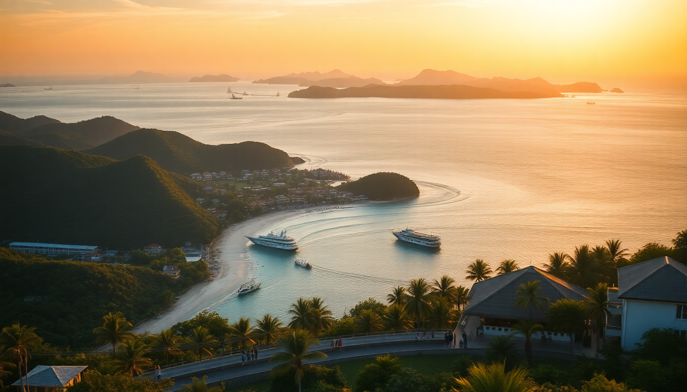

Best Time to Visit the Maldives: Month-by-Month Guide 2025

I’ve been to the Maldives three times now, and each trip felt like a completely different country depending on the month. The “best” time to go isn’t a single answer—it depends on whether you want glass-calm seas for manta rays, dry deck weather at a water villa, or a deal that doesn’t require a second mortgage. Here’s what I learned planning my own 2025 trips.
What’s the weather actually like across the year?
The Maldives has two monsoon seasons, but they’re not as punishing as you’d think. The northeast monsoon (December to April) is the dry season—blue skies, low humidity, and calm seas. The southwest monsoon (May to November) brings more rain and wind, but also cheaper rates and better surf. I spent a week in Ari Atoll during late June and got sunburned on three out of seven days, with short afternoon downpours that cleared fast. The trick is knowing which month within each season you’re booking.
- Dry season peak (Dec–Feb): 25–30°C, almost zero rain, but peak prices and crowds at resorts like Conrad Maldives Rangali Island in Ari Atoll.
- Shoulder months (Mar–Apr & Nov): Still mostly dry, lower humidity, and rates drop by 20–30% at places like Anantara Kihavah in Baa Atoll.
- Wet season (May–Oct): Rain is common but often brief; you’ll get clear mornings and stormy afternoons. Best for budget travelers and surfers.
When is the best time for diving and snorkeling?
If you’re in the water to see big marine life, timing matters more than the weather report. I did a liveaboard out of Malé in early January and saw whale sharks near South Ari Atoll almost every day. But the manta ray aggregation at Hanifaru Bay in Baa Atoll only peaks between June and November, which is also the wettest stretch. You have to pick your priority.
- Whale sharks (year-round, best Dec–Apr): Head to South Ari Atoll—the marine protected area near Manta Point is reliable.
- Manta rays (Jun–Nov): Hanifaru Bay in Baa Atoll gets dozens of mantas feeding on plankton. I went in August and counted 15 in one snorkel session.
- Coral visibility (Jan–Apr): Calm seas mean 20–30 meter visibility. I could see the reef drop-off from the deck at **LUX* South Ari Atoll**.
- Surfing (Mar–Oct): Swells hit the eastern atolls. Thulusdhoo in North Malé Atoll is the local break.
Which months are cheapest for flights and resorts?
I’ve booked two trips during the wet season, and the savings are real. Flights from the US or Europe to Malé International Airport (MLE) drop by 40–50% in May and June. Resorts like Komandoo Island Resort in Lhaviyani Atoll (a short seaplane from Malé) slash rates by half in June. The catch: you risk a few days of solid rain, and some resorts close for renovations during this window.
- Lowest prices (May–Jun): Expect 50% off peak rates. I paid $350/night for a water villa at Cocoa Island by COMO in South Malé Atoll.
- Shoulder deals (Sep–Oct): Still rainy but fewer tourists. Soneva Fushi in Baa Atoll offers “monsoon packages” with free upgrades.
- Avoid (Dec–Jan): Prices triple. A basic overwater bungalow at Sheraton Maldives Full Moon near Malé runs $800+/night.
What’s the best time for a honeymoon or special occasion?
For a trip where you want guaranteed sun and zero stress about weather, stick to January through March. I took my partner to Baa Atoll in February, and we had 10 straight days of cloudless skies. The trade-off is that every resort is packed, and dinner reservations at places like Ithaa Undersea Restaurant at Conrad Rangali need booking months ahead.
- Peak romance (Jan–Mar): Book Gili Lankanfushi in North Malé Atoll for private-castaway vibes.
- Shoulder romance (Apr & Nov): Fewer guests, still good weather. The Nautilus Maldives in Baa Atoll runs a “sunset cruise” that’s half the price in April.
- Avoid (May–Jul): Storms can ground seaplanes for hours, which is a nightmare if you’re on a tight schedule.
How does the local culture affect timing?
Ramadan shifts every year, and in 2025 it runs from February 28 to March 29. On resort islands, it won’t affect you much—they serve food and alcohol as usual. But if you’re staying in Malé or a local island like Maafushi, expect restaurants to close during daylight hours. I landed in Malé during Ramadan in 2023 and couldn’t find a lunch spot open near Muliaage until 6 PM. Plan accordingly.
- Ramadan (Feb 28–Mar 29, 2025): Avoid local islands for lunch. Resorts are unaffected.
- Independence Day (July 26): Fireworks in Malé near Republic Square—worth a stop if you’re transiting.
- Eid al-Fitr (late March 2025): Local ferries and speedboats run reduced schedules. Book transfers through your resort.
What about the south versus north atolls by season?
The Maldives stretches 800 kilometers north to south, and weather patterns vary. Ari Atoll (central) gets less rain than Baa Atoll (north) during the wet season. I spent a week in Ari Atoll in October and had five dry days; a friend in Baa Atoll the same week got rained out for three. If you’re booking for June–October, pick a resort in the central or southern atolls.
- Dry season (Dec–Apr): Both atolls are similar—choose by resort, not weather.
- Wet season (May–Nov): Ari Atoll is drier. Baa Atoll gets more plankton (good for mantas) but also more rain.
- Seaplane access: Ari Atoll is 25 minutes from Malé; Baa Atoll is 35 minutes. In bad weather, shorter flights are less likely to cancel.
FAQ
Is it worth going to the Maldives during the rainy season? Yes, if you’re flexible. I went in June and got plenty of sun between showers. The ocean stays warm (28°C), and diving visibility is still good in Ari Atoll. Just avoid booking a resort that relies on a seaplane—delays can eat a day of your trip. Budget for a backup plan like a book or board games.
What’s the worst month to visit the Maldives? For pure weather, May is the worst. It’s the transition month between monsoons, so you get unpredictable squalls and high humidity. I had a trip to Baa Atoll in May 2022 where it rained four days straight. Prices are low, but you’re gambling with your vacation time.
Do I need to book resorts months in advance for 2025? For January–March, yes—book by September 2024. For June–October, you can often snag last-minute deals 2–4 weeks out. I booked Cocoa Island in July for August travel and got 30% off. Use a flexible booking platform for the wet season.
Conclusion
- Best overall weather: January–March. Book Ari Atoll for calm seas and whale sharks.
- Best for budget: May–June or September–October. Stay at Komandoo Island Resort or Cocoa Island.
- Best for manta rays: June–November. Head to Hanifaru Bay in Baa Atoll.
- Best for honeymoon privacy: February or November. Try Gili Lankanfushi or The Nautilus.
- Avoid if possible: May for rain, December–January for crowds and cost.